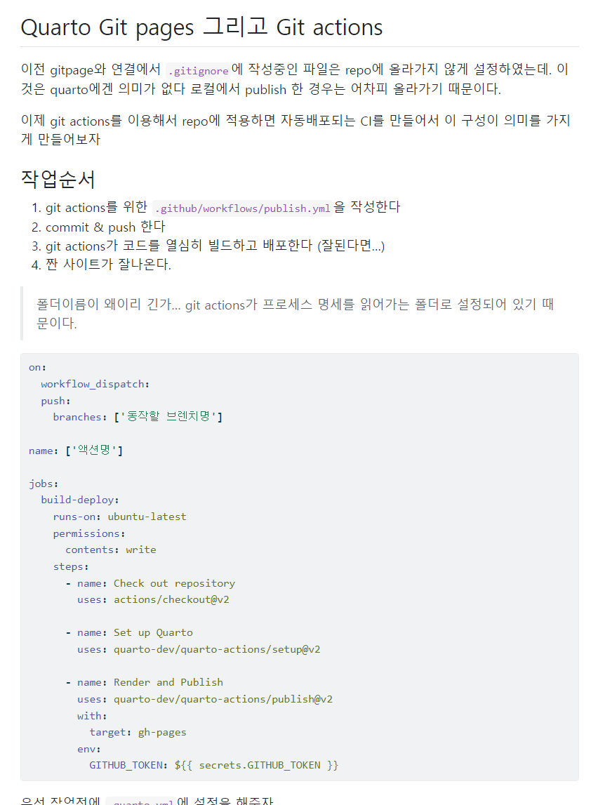

Git actions 으로 자동배포
이전 gitpage와 연결에서 .gitignore에 작성중인 파일은 repo에 올라가지 않게 설정하였는데. 이것은 quarto에겐 의미가 없다 로컬에서 publish 한 경우는 어차피 올라가기 때문이다.
이제 git actions를 이용해서 repo에 적용하면 자동배포되는 CI를 만들어서 이 구성이 의미를 가지게 만들어보자
작업순서
- git actions를 위한
.github/workflows/publish.yml을 작성한다 - commit & push 한다
- git actions가 코드를 열심히 빌드하고 배포한다 (잘된다면…)
- 짠 사이트가 잘나온다.
폴더이름이 왜이리 긴가… git actions가 프로세스 명세를 읽어가는 폴더로 설정되어 있기 때문이다.
on:
workflow_dispatch:
push:
branches: ['동작할 브렌치명']
name: ['액션명']
jobs:
build-deploy:
runs-on: ubuntu-latest
permissions:
contents: write
steps:
- name: Check out repository
uses: actions/checkout@v2
- name: Set up Quarto
uses: quarto-dev/quarto-actions/setup@v2
- name: Render and Publish
uses: quarto-dev/quarto-actions/publish@v2
with:
target: gh-pages
env:
GITHUB_TOKEN: ${{ secrets.GITHUB_TOKEN }}우선 작업전에 _quarto.yml에 설정을 해주자
execute:
freeze: auto노트내에 실행이가능한 코드를 로컬에서만 실행하게 해주는 옵션이다. venv 나 renv로 액션내에서 빌드하게 할 수도 있다고 하지만 그건 좋지 않은 선택같다. freeze: auto가 설정되면 _freeze에 실행가능한 코드의 결과가 저장된다. _freeze폴더를 만들어 repo에 추가해준다.
이제 작성완료한 이페이지랑 같이 배포해보자

잘나온다 쉽네~ 다음은 지금은 페이지에 접근하면 첫페이지로 자동으로 이동하는데 이걸 수정이 가능한지 알아보자